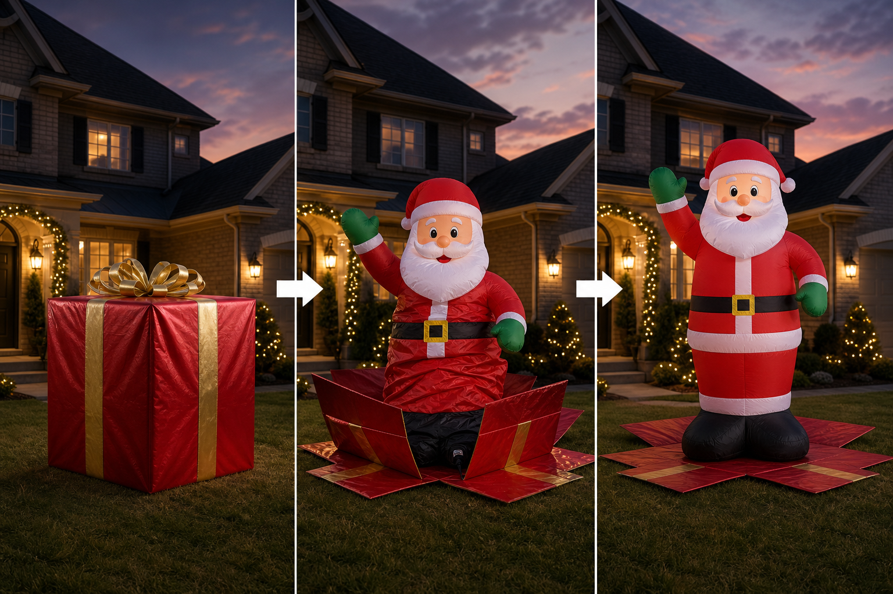

Water rescue concept
Ball in hand.
Lifesaver in water.
ThrowFloat is a regulation football with a built-in water-activated inflator. Throw it to a struggling swimmer. On water contact it rapidly inflates into a horseshoe safety float they can grab. No complex training. One throw changes everything.
The deploy
One throw. Immediate safety.
You see someone in trouble. You throw the football. It hits the water, the sensor triggers, and within seconds it transforms from a ball into a high-visibility inflatable horseshoe float the person can reach and hold onto until help arrives.
The same object that was just a fun game ball becomes the rescue tool.
How it works
Throw. Hit water. Inflate.
- Throw the ball: Standard grip and throw — anyone can do it. Travels like a normal football.
- Water contact: Built-in sensor detects immersion and triggers the compressed gas or chemical inflator.
- Rapid deploy: The ball unfolds and inflates into a buoyant safety float with grab handles. High visibility color and reflective strips.

Traditional rescue
Heavy rings, slow to throw, hard for kids or untrained people to use effectively.
Traditional life rings are bulky, awkward to throw accurately, and often miss or drift away from the person in distress.
ThrowFloat advantage
Familiar, accurate, and automatic.
Everyone knows how to throw a football. The inflation happens automatically on water contact. Compact until needed. Turns a sports ball into a serious safety device.
Current status
This is the first live concept site.
This page is a static shareable preview of the ThrowFloat idea — no orders, no real product yet. The goal is to make the concept instantly understandable so we can get feedback and move to prototypes, patents, and feasibility testing.